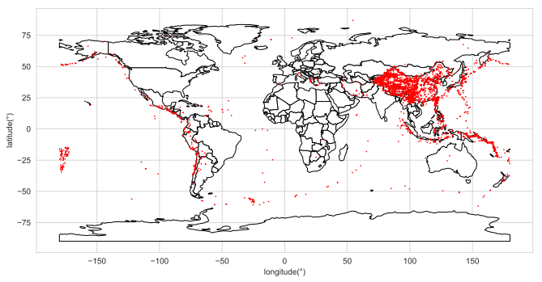

Python Maps
A very simple example to show how to plot a scatter map using Python geopandas library. The data is from this link. Attention that some columns’ names are Chinese characters. I give methods to change those names below.
import os
import pandas as pd
import numpy as np
import seaborn as sns
import matplotlib.pyplot as plt
import geopandas as gp
sns.set_style("whitegrid")%matplotlib inline
%config InlineBackend.figure_format = 'svg'world = gp.read_file(gp.datasets.get_path('naturalearth_lowres'))earthquake = pd.read_csv("./data/earthquake20190630.csv",encoding = 'gb18030') earthquake.head()| 发震时刻 | 震级(M) | 纬度(°) | 经度(°) | 深度(千米) | 参考位置 | |
|---|---|---|---|---|---|---|
| 0 | 2019-06-30 21:44:44 | 3.0 | 27.56 | 112.10 | 6.0 | 湖南娄底市双峰县 |
| 1 | 2019-06-30 21:32:29 | 3.1 | 28.44 | 104.81 | 8.0 | 四川宜宾市长宁县 |
| 2 | 2019-06-30 12:14:25 | 3.0 | 28.43 | 104.77 | 9.0 | 四川宜宾市珙县 |
| 3 | 2019-06-30 03:44:11 | 4.8 | 22.43 | 122.31 | 30.0 | 台湾台东县海域 |
| 4 | 2019-06-30 03:09:29 | 3.1 | 31.00 | 98.96 | 7.0 | 四川甘孜州白玉县 |
colname = ['Time','Degree','latitude(°)', 'longitude(°)',
'depth(km)', 'position']
newdata = np.array(earthquake)
earthquake2 = pd.DataFrame(newdata,columns = colname)
earthquake2.head()| Time | Degree | latitude(°) | longitude(°) | depth(km) | position | |
|---|---|---|---|---|---|---|
| 0 | 2019-06-30 21:44:44 | 3 | 27.56 | 112.1 | 6 | 湖南娄底市双峰县 |
| 1 | 2019-06-30 21:32:29 | 3.1 | 28.44 | 104.81 | 8 | 四川宜宾市长宁县 |
| 2 | 2019-06-30 12:14:25 | 3 | 28.43 | 104.77 | 9 | 四川宜宾市珙县 |
| 3 | 2019-06-30 03:44:11 | 4.8 | 22.43 | 122.31 | 30 | 台湾台东县海域 |
| 4 | 2019-06-30 03:09:29 | 3.1 | 31 | 98.96 | 7 | 四川甘孜州白玉县 |
world.plot(color='white', edgecolor='black',figsize=(11,9))
sns.scatterplot(x='longitude(°)',
y='latitude(°)',linewidth=0,data=earthquake2,s=3, color='red')<matplotlib.axes._subplots.AxesSubplot at 0x230b317bb38>

Figure 1: A map shows earthquakes happened worldwide during 2017-2019
Demonstrating Animated Graphs
Use R animation package could generate some GIF graphs. For example, I want to illustrate United States presidential election in a country map. How could I achieve it? A for loop is necessary.
library(maps)
library(animation)
library(magrittr)
library(viridis)
library(dplyr)
library(readr)
election <- read_csv("./data/elections.csv") # import data
election <- election %>%
mutate(sharedem = dem/(rep+dem+other),
sharerep = rep/(rep+dem+other))
data(viridis.map) # viridis palette
viridis.map <- viridis.map %>%
filter(opt=='C')
coldt <- viridis.map[election$sharerep*250,] %>%
select(-opt)
election$county.col <- rgb(coldt[,1],coldt[,2],coldt[,3]) # get viridis palette
one <- viridis.map[0.125*250,] # set legend colors
two <- viridis.map[0.375*250,]
thre <- viridis.map[0.625*250,]
fo <- viridis.map[0.875*250,]
fi <- rgb(one[,1],one[,2],one[,3])
se <- rgb(two[,1],two[,2],two[,3])
thr <- rgb(thre[,1],thre[,2],thre[,3])
fr <- rgb(fo[,1],fo[,2],fo[,3])
colors = c(fr,thr,se,fi) # legend colors
library(readr)
setwd('./output') # your output folder
presidenten <- read_csv("president_en.csv") %>%
as.data.frame()
saveGIF({
for (i in seq(1960,2012,4)){ # 1960-2012 loop every 4 year
thisyear <- subset(election,year == i)
map(database = "county", # plot by year
col = thisyear$county.col,
fill = T)
tit <- paste('United States Presidential Election:',i) # get every year title
title(tit,cex.main=1.3) # Add title
sub <- subset(presidenten,year == i)
ps <- paste('Winner:',sub[ ,2],'-',sub[ ,3]) # get every year winner
mtext(ps,side = 1,cex=1.1)
leg.txt <- c("75-100%","50-75%","25-50%","0-25%")
legend("bottomright", leg.txt,
fill = colors,title= ("Republican %"),
cex=0.83)
}
} ,movie.name="election_en.gif",
interval = 2) # set every plot stay time

Figure 2: The colors indicate support rate of the two parties